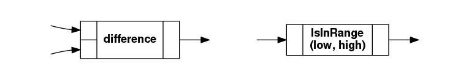

Reactive programming with Python – Part 1¶
At Eniram, we help shipping companies reduce fuel consumption using a data-driven approach. Our servers crunch measurement data for hundreds of variables from hundreds of ships sailing around the world.
We validate incoming data, and perform analysis and statistical modeling based on the data. In some cases, processing takes place on board ships without connectivity or on workstations of data analysts.
It’s desirable to have one unified toolchain for data processing. The tools should enable non-programmers to specify rules for data validation and analysis.
We’ve long relied on Python and a number of its scientific libraries in our data processing stack, and we wanted to extend the stack by introducing a framework for organizing data flow and processing data. Dataflow oriented tools are a natural fit for a data-centered business, but none of the existing packages [1] for Python were a perfect fit for our growing needs. Thus, we decided to build an in-house solution.
Our core library Lusmu is a minimal reactive programming framework – we’ve tried to avoid feature creep and leave out anything we don’t need. In particular, we strived for simplicity and performance and left out things like type checking, unit handling, data buffering and parallel execution support. Some of these advanced features are or will be implemented in higher layers of our stack or as optional features of Lusmu which can be turned on when needed.
This blog post series will start with a brief introduction to dataflow and reactive programming with examples written using Lusmu. In subsequent parts we will introduce
- source code for a simplified version of Lusmu to help understand what goes on under the hood
- additional features for scientific data processing
- a declarative graph DSL for non-programmers
- templates and loops for making complex graphs
- other parts of the Eniram stack around Lusmu.
Confusion: “Dataflow” or “reactive” programming?¶
The terminology used in this field of programming is quite vague and inconsistent. For the purpose of this blog post series, we’re anchoring ourselves in conventions defined by Matt Carkci in his recent book “Dataflow and Reactive Programming Systems” (Lean Publishing 2014). As a matter of fact, we went through the trouble of renaming many of the classes and attributes in Lusmu to match terminology used by Carkci. The result of this renaming lives in the fix-terminology branch on GitHub.
However, the definitions of Reactive programming quoted by Carkci don’t match what Lusmu is and does, while those in the Wikipedia article for Reactive programming most certainly do.
Carkci suggests to use Dataflow and Reactive synonymously in casual use, so for now we’ll just claim that Lusmu indeed is a Reactive programming library.
Operations, input ports and output ports¶
In dataflow programming, the basic data processing unit is an operation.
In Lusmu we define operations as Python callables – either simple functions or classes which define the __call__ magic method. The callables take arbitrary Python data types as inputs and can output any Python types as well:
>>> def difference(a, b):
... """Calculate the difference between numbers using a simple function"""
... return b - a
...
>>> class IsInRange:
... """Check that number is in range using a callable object"""
... def __init__(self, low, high):
... """Save the low and high limits"""
... self.low = low
... self.high = high
...
... def __call__(self, data):
... """Perform the actual check against saved limits"""
... return (self.low <= data) & (data <= self.high)
Note
Here, the use of the & operator instead of and looks admittedly unpythonic, but it’s there for a good reason: this way the comparison works both for scalars and for NumPy arrays.
To visualize operations, we use rectangles with input ports on the left and the output port on the right:

Source nodes and operation nodes¶
In dataflow programming, the program is built as a directed graph built out of nodes. Nodes are connected to each other with arcs which use the output and input ports as endpoints.
Data is fed into the system using source nodes. In Lusmu, source nodes are defined using the SrcNode class. Every Lusmu node needs to hold a string identifier as its name, and that’s all we need at this point:
>>> from lusmu.core import SrcNode
>>> speed_over_ground = SrcNode('speed_over_ground')
>>> speed_through_water = SrcNode('speed_through_water')
Data processing happens in operation nodes. Each operation node uses one of the operation functions to perform some transformation on input data.
In Lusmu, the OpNode class is used to define operation nodes:
>>> from lusmu.core import OpNode
>>> current = OpNode('current',
... op=difference,
... inputs=[speed_over_ground, speed_through_water])
>>> ok_current = OpNode('ok_current',
... op=IsInRange(-2, 2),
... inputs=[current])
Notice how the set of inputs of a node always corresponds to the signature of the operation:
- def difference(a, b) – [speed_over_ground, speed_through_water]
- def __call__(self, data) – [current]
A complete visualization of the graph we just defined with two source nodes, two operation nodes and four arcs connecting the nodes together:
![digraph {
rankdir = LR;
graph [style=rounded; fontname="Helvetica-Bold"];
subgraph cluster_sog {
label="speed_over_ground";
speed_over_ground [shape=rect, label="output port"]; }
subgraph cluster_stw {
label="speed_through_water";
speed_through_water [shape=rect, label="output port"]; }
subgraph cluster_difference {
label="current";
difference [shape=record; label="{{<a>|<b>}|difference|<o>}"; fontname="Helvetica-Bold"];
node [shape=rect]; edge [label=""];
difference_i1 [label="input\nport 1"];
difference_i2 [label="input\nport 2"];
difference_o [label="output\nport"];
difference_i1 -> difference:a;
difference_i2 -> difference:b;
difference:o -> difference_o; }
subgraph cluster_IsInRange {
label="ok_current";
IsInRange [shape=record; label="{<i>|IsInRange\n(-2, 2)|<o>}"; fontname="Helvetica-Bold"];
node [shape=rect]; edge [label=""];
IsInRange_i [label="input\nport"];
IsInRange_o [label="output\nport"];
IsInRange_i -> IsInRange:i;
IsInRange:o -> IsInRange_o; }
node [label="", shape=none; width=0]; edge [label="arc"];
speed_over_ground -> difference_i1;
speed_through_water -> difference_i2;
difference_o -> IsInRange_i;
IsInRange_o -> a4;
}](_images/graphviz-c7cfac353ca7dee569e04d6483eaf1e7260ce084.png)
Scalar example¶
Let’s drive the graph first using simple scalar values:
>>> speed_over_ground.set_data(22.0)
set()
>>> speed_through_water.set_data(23.5)
set()
Note
The return value (here an empty set) is used by eager evaluation (Push Data) support. This example uses lazy evaluation (Pull Data), and the return value has no use. Keep tuned for upcoming parts of this blog series for more information.
Due to lazy evaluation, the current and ok_current nodes haven’t been fired yet. We need to read the results of the calculation first:
>>> ok_current.get_data()
True
This fires the ok_current node. Firing a node:
- visits each node connected to an input port of the node
- if an input node has no data, fires the input node
- gets data from each input node
- calls the operation function with the input data
- saves the data in the node
So what get_data() does recursively in this case is:
- fire ok_current
- check current – no data
- fire current
- check and get data from speed_over_ground and speed_through_water
- call difference() with the data
- save and return result from current
- call IsInRange.__call__() with the result
- save and return result from ok_current
If we at this point retrieve data from the intermediate current node, no operations are performed since all data is already available:
>>> current.get_data()
1.5
Vector example¶
Since our operations use simple subtraction and comparison operators only, it turns out that we create can run this graph unchanged using NumPy vector values:
>>> import numpy as np
>>> from lusmu.vector import OpNode, SrcNode
>>> speed_over_ground = SrcNode('speed_over_ground')
>>> speed_through_water = SrcNode('speed_through_water')
>>> current = OpNode('current',
... op=difference,
... inputs=[speed_over_ground, speed_through_water])
>>> ok_current = OpNode('ok_current',
... op=IsInRange(-2, 2),
... inputs=[current])
>>> speed_over_ground.set_data(np.array([22.0, 21.7, 21.9]))
set()
>>> speed_through_water.set_data(np.array([23.5, 23.8, 23.3]))
set()
>>> ok_current.get_data()
array([ True, False, True], dtype=bool)
>>> current.get_data()
array([ 1.5, 2.1, 1.4])
Summary¶
Lusmu implements a reactive programming library with the following characteristics:
- data type agnostic
- no type checking
- no unit handling
- Python callables as data operations
- lazy evaluation (Pull Data)
- one or more input ports
- only one output port
- arcs are implicit in nodes
Footnotes
| [1] | Other dataflow-oriented Python tools:
|